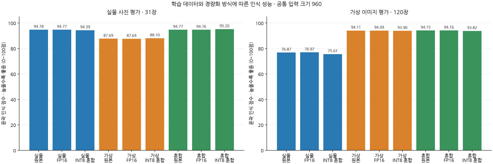
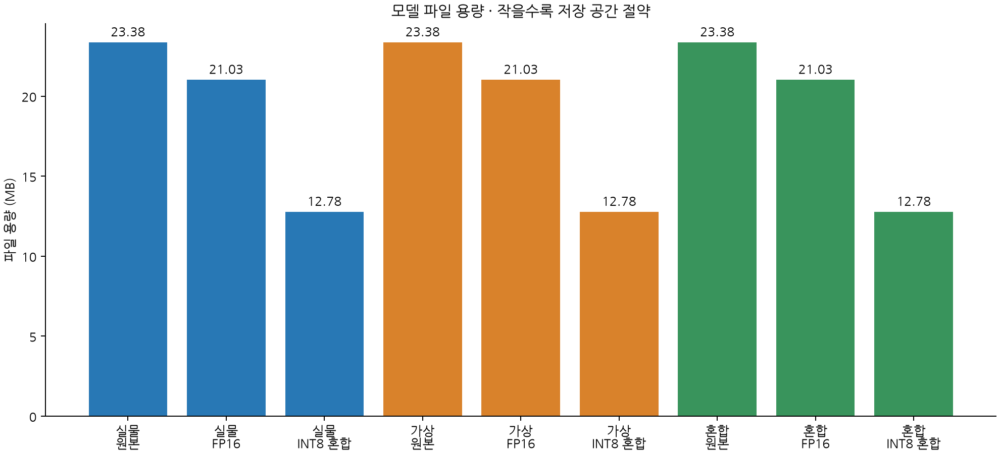
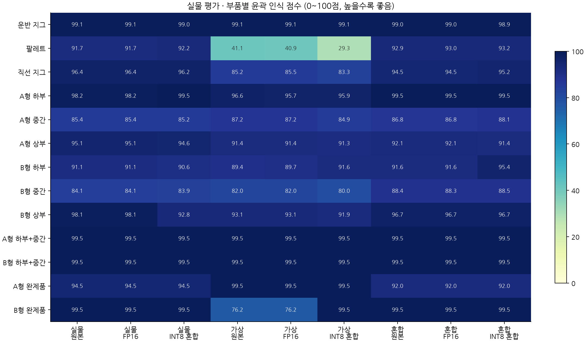
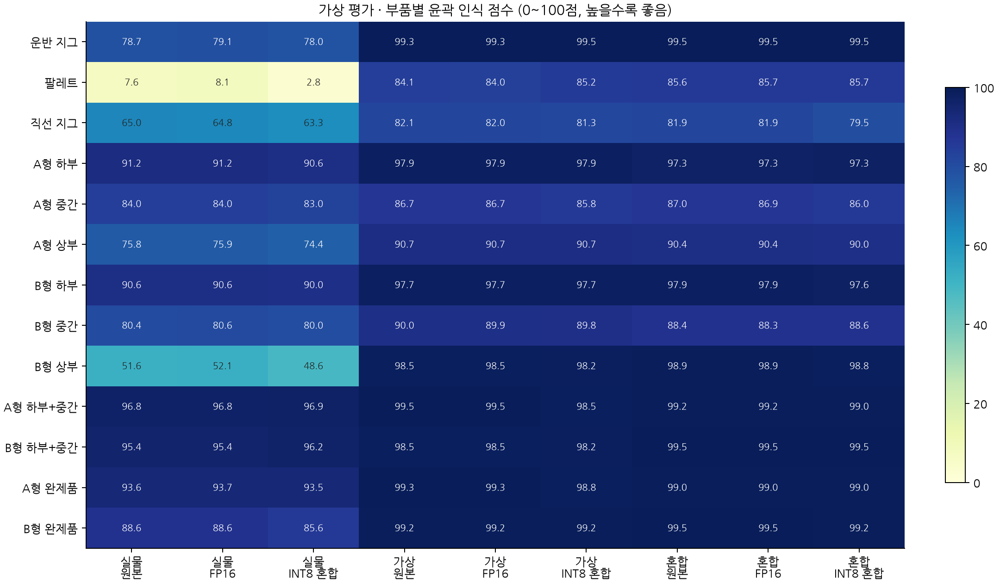
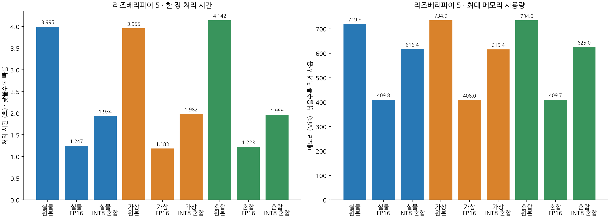

실물 사진 31장 · 가상 이미지 120장 · 공통 입력 크기 960 · YOLO26s-seg
추천: 혼합(가상+실물) 학습 · FP16 (16비트 실수) 실물 인식 성능을 유지하면서 처리 시간과 메모리 사용량의 균형이 좋습니다.
↑ 높을수록 좋음 · ↓ 낮을수록 좋음 · 초록색 행은 추천 모델
인식 성능 비교
학습에 사용한 이미지
모델 종류
실물 윤곽 인식 점수 ↑
가상 윤곽 인식 점수 ↑
잘못 검출한 수 ↓
놓친 수 ↓
실물
원본
94.78
76.87
0
0
실물
FP16 · 16비트 실수
94.77
76.97
0
0
실물
INT8 · 8비트 정수 혼합
94.39
75.61
0
0
가상
원본
87.69
94.11
7
6
가상
FP16 · 16비트 실수
87.64
94.09
7
6
가상
INT8 · 8비트 정수 혼합
88.10
93.90
11
8
혼합(가상+실물)
원본
94.77
94.15
0
0
혼합(가상+실물)
FP16 · 16비트 실수 · 추천
94.76
94.16
0
0
혼합(가상+실물)
INT8 · 8비트 정수 혼합
95.20
93.82
0
0
라즈베리파이 실행 성능 비교
학습에 사용한 이미지
모델 종류
한 장 처리 시간 ↓ (초)
초당 처리 장수 ↑
최대 메모리 ↓ (MiB)
파일 용량 ↓ (MB)
실물
원본
3.995
0.25
719.8
23.38
실물
FP16 · 16비트 실수
1.247
0.80
409.8
21.03
실물
INT8 · 8비트 정수 혼합
1.934
0.52
616.4
12.78
가상
원본
3.955
0.25
734.9
23.38
가상
FP16 · 16비트 실수
1.183
0.85
408.0
21.03
가상
INT8 · 8비트 정수 혼합
1.982
0.50
615.4
12.78
혼합(가상+실물)
원본
4.142
0.24
734.0
23.38
혼합(가상+실물)
FP16 · 16비트 실수 · 추천
1.223
0.82
409.7
21.03
혼합(가상+실물)
INT8 · 8비트 정수 혼합
1.959
0.51
625.0
12.78
표 읽는 법
학습 이미지: 실물은 실제 촬영 사진, 가상은 컴퓨터로 만든 이미지, 혼합은 두 종류를 함께 사용한 학습을 뜻합니다.
윤곽 인식 점수: 물체의 종류와 모양을 얼마나 정확하게 구분하는지 평가한 점수입니다. 100점에 가까울수록 좋으며, 단순 정답률(%)은 아닙니다. 기술 지표는 마스크 mAP50–95입니다.
잘못 검출한 수: 실제 정답 객체와 일치하지 않은 검출 수입니다. 놓친 수: 정답 객체 중 검출과 연결되지 않은 수입니다. 같은 클래스에서 마스크 겹침 비율이 50% 이상이어야 일치로 계산합니다.
한 장 처리 시간: 이미지 한 장의 전처리·모델 계산·결과 후처리에 걸린 시간의 중앙값입니다. 짧을수록 빠릅니다. 초당 처리 장수는 이 시간으로 환산한 값입니다.
최대 메모리: 모델을 실행하는 동안 측정한 최대 프로세스 메모리입니다. 파일 용량과는 다른 수치입니다. 메모리는 MiB, 저장 파일은 MB 단위입니다.
모델 종류: 원본은 PyTorch 모델입니다. FP16은 16비트 부동소수점(실수) 형식이며 NCNN으로 실행합니다. INT8은 8비트 정수 양자화이며 ONNX Runtime으로 실행합니다. 이번 INT8 모델은 일부 연산을 FP32(32비트 실수)로 유지한 혼합 정밀도 모델입니다.

실물·가상 윤곽 인식 점수 비교

모델 파일 용량 비교

실물 사진의 부품별 인식 점수

가상 이미지의 부품별 인식 점수

라즈베리파이 처리 시간과 메모리 사용량
평가 조건과 해석 범위
학습 데이터 효과와 저장 정밀도 효과를 구분합니다. 세 원본은 같은 YOLO26s-seg이며 입력 960으로 비교합니다.
가상 전용: 학습 960/검증 120. 실물 전용: 학습 243/검증 30. 혼합: 학습 1,203/검증 150. 혼합은 원본 장수 비율을 유지합니다.
검증셋 구성은 학습 도메인에 따라 다릅니다. 최종 테스트셋은 공통이며 학습·양자화 보정에 사용하지 않았습니다.
INT8은 모든 연산이 INT8인 모델이 아닙니다. 일부 입력·어텐션·최종 출력층을 FP32로 유지하는 동일한 혼합 정밀도 규칙을 적용했습니다.
오검출/누락은 실물 원본 픽셀 마스크 기준, confidence≥0.25 및 같은 클래스 mask IoU≥0.5입니다.
마스크 mAP는 Ultralytics 표준 평가입니다. 파이 경량 런타임은 NumPy/OpenCV 후처리를 사용하며 INT8 동점 NMS에서 선택 경계가 달라질 수 있습니다.
파이 속도는 실제 Pi 5 CPU 4스레드에서 동일 사진, 준비 3회·측정 12회로 측정합니다. 카메라·그리기·전송·표시 시간은 포함하지 않습니다.
실물 테스트는 같은 촬영 환경에서 분리한 묶음이며 일부 완제품은 객체 2개뿐입니다. 새 날짜·조명·카메라 일반화나 로봇 작업 성공률을 뜻하지 않습니다.